WWDC 2022: What's new in Xcode
Find hereafter a detailed summary of the above named video which belongs to a taxonomy of some WWDC footages.
The original video is available on the official Apple website (session 110427).
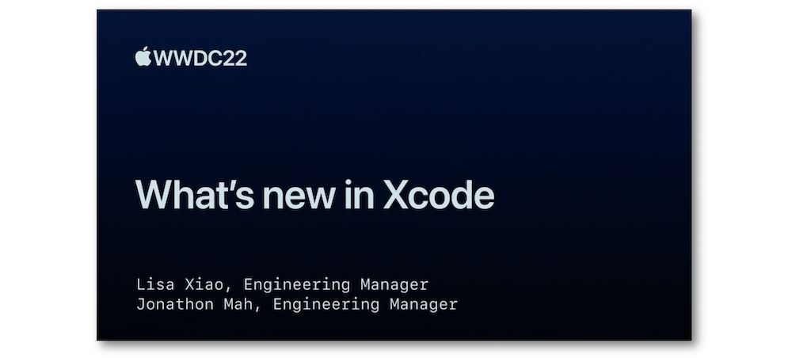
"Discover the latest productivity and performance advancements in Xcode 14. We'll introduce you to the fully redesigned SwiftUI canvas experience, explore enhancements to code completion and navigation, and take you through performance improvements we've made throughout the entire development process. We'll also show you how you can now read and respond to feedback on your TestFlight builds without ever leaving Xcode."
Most of the illustrations are parts of the Apple presentations and may be available at the Resources section inside the Overview sheet of each video.
Hereafter, the underlined elements lead directly to the playback of the WWDC video at the appropriate moment.
Previews #
The preview canvas is now updated as changes occur and can display various types of modifications with no line of code.
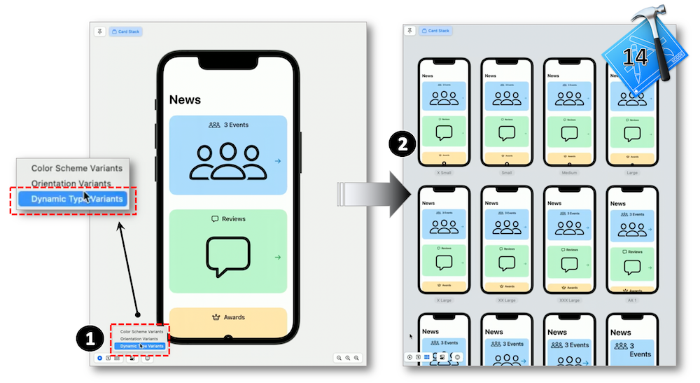
Code completion #
Initializers are suggested in a completion list that contains items with possible defautlt values.
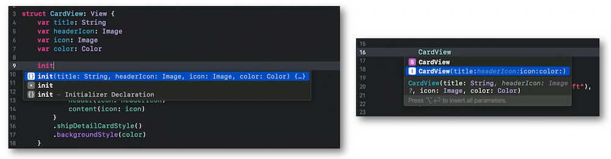
SF symbols #
The SF symbols are available in the library and can be easily incorporated in code.
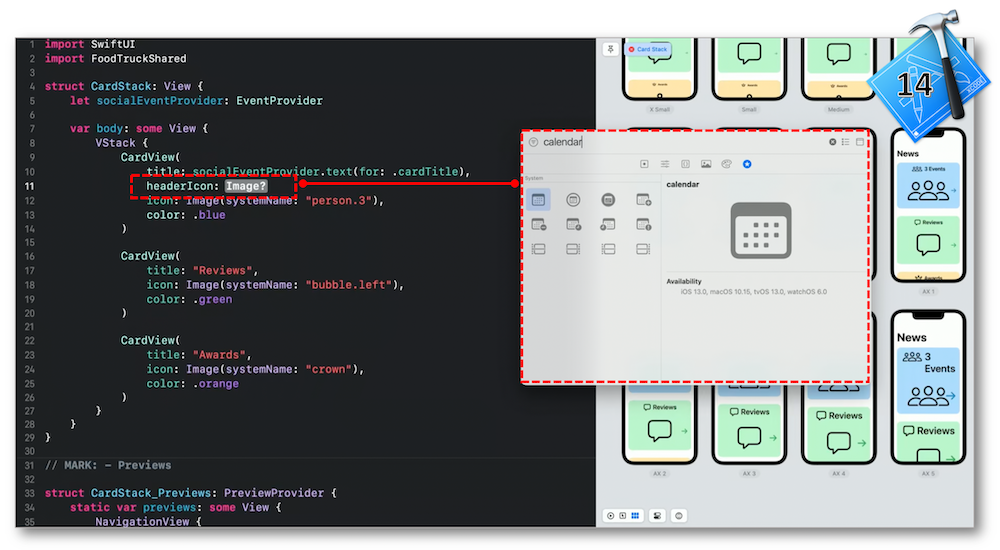
Build & velocity #
Xcode 14 has significantly improved the build performance.
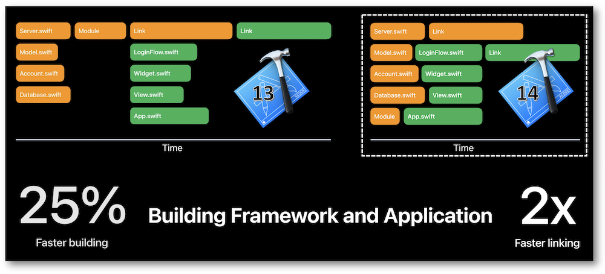
The new build timeline feature has enhanced the build scheduling by providing a rendering to visualize what's processing during this time.
Using Interface Builder among other tools, Xcode has improved the velocity in various areas: testing, building and linking and notarizing.
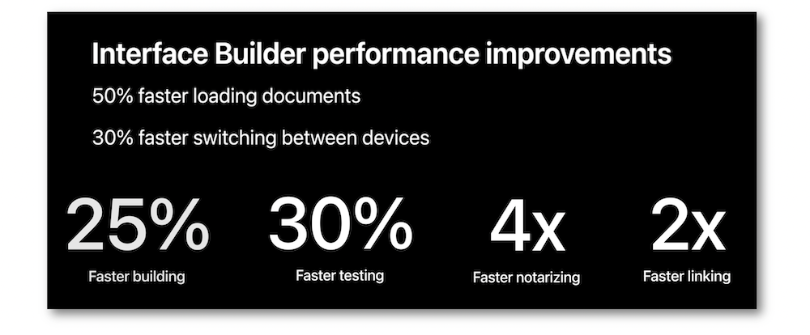
Multiplatform context #
Creating a multiplatform app is now easier than ever thanks to a single target to be used with the different platforms to be supported.
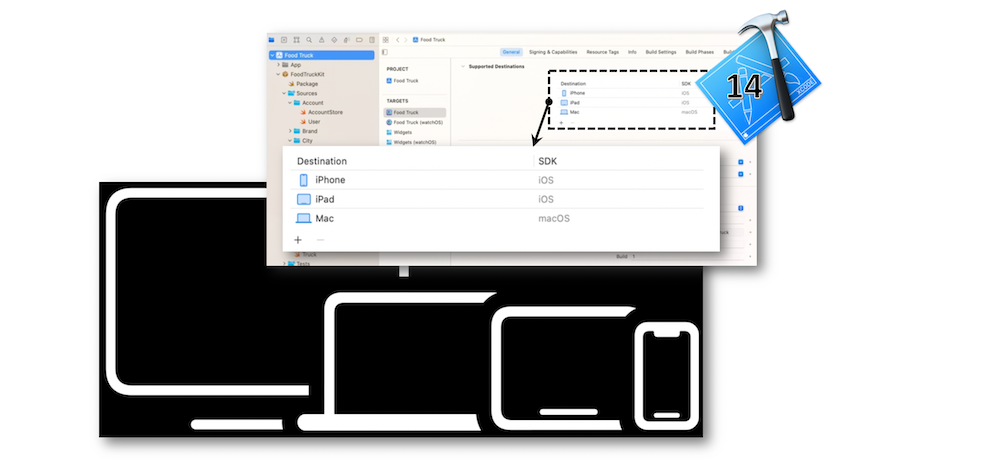
Debugger & Plugins #
Enhancements have been made regarding the leak of objects whose path and weight are henceforth highlighted within the memory debugger.
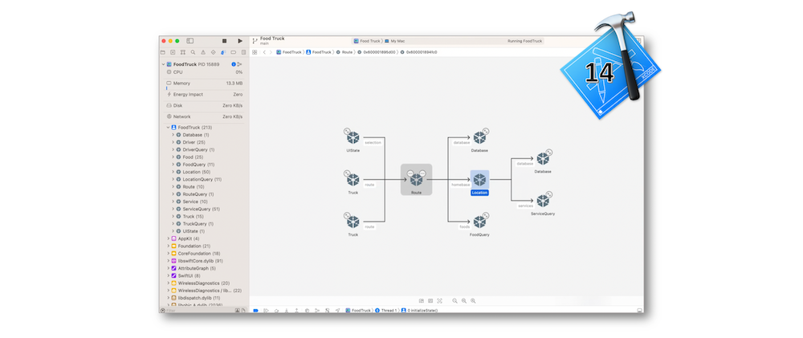
Various types of operations can be executed during building for the package plugins whose resources can be localized.
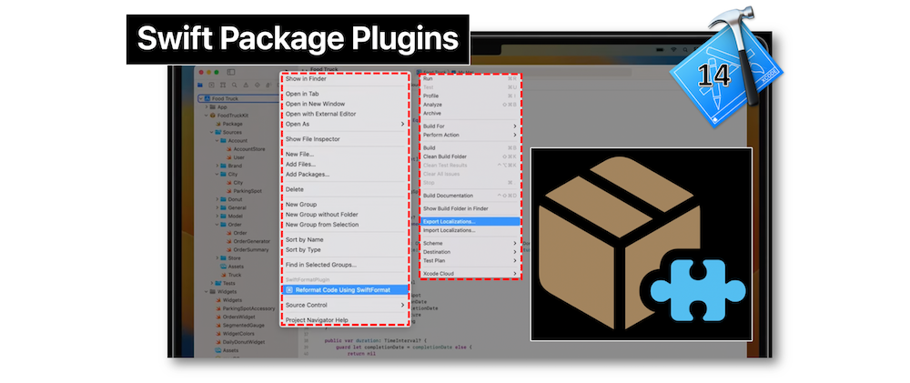
Run destination chooser #
The run destination chooser permits an easier selection of devices inside its new popup window.
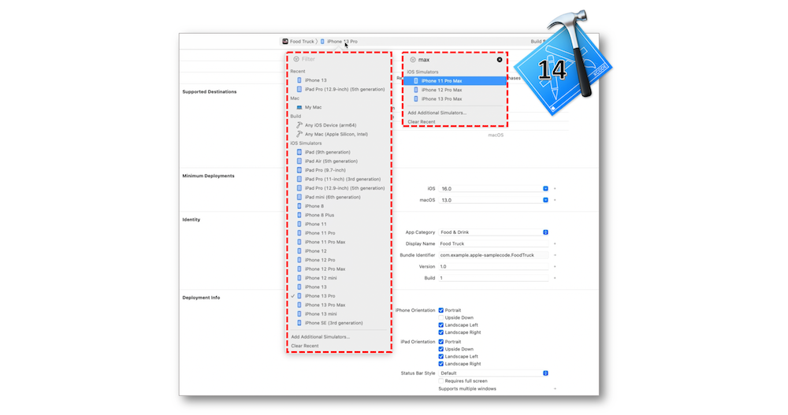
Organizer window #
Two new reports are introduced in the Organizer window: feedback and hangs.
The feedback organizer is made for getting the TestFlight feedback directly in Xcode...
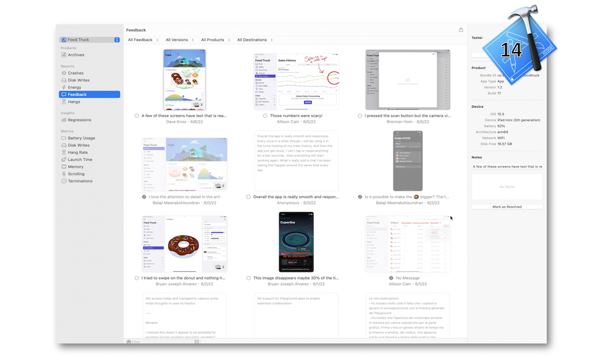
... while the hangs report is dedicated to show the most important hangs from App Store users.
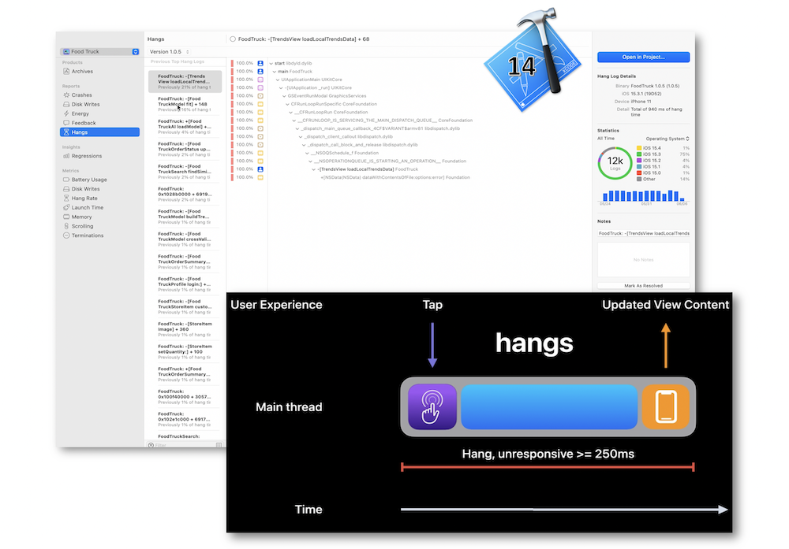
Icons #
Xcode 14 automatically creates all of the different sizes from a single image for providing the necessary icons.
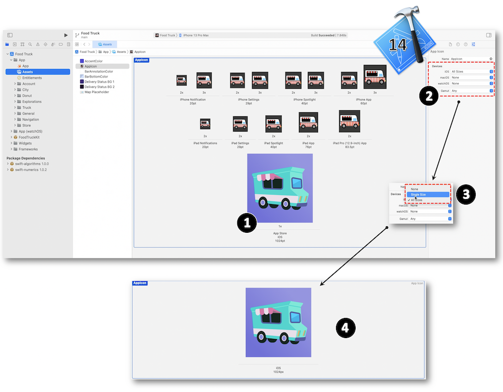